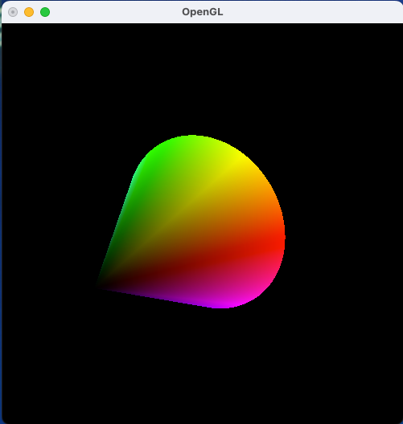

| 氏名 | 入佐 啓士 |
|---|---|
| クラス | 理科 1 類 37 組 |
| 学生証番号 | J4-220897 |
(例題のため省略)
(なし)
(文字列の表示なし)
今回は、回転や姿勢に対する処理を回転行列で実現するクラスを作成した。
基本的なメソッドは行列の積を返すmultiplyメソッドで、残りは引数で指定した回転軸のxyz成分から新しい回転行列を返すメソッドと、並行移動ベクトルを引数に持ち、OpenGLで扱える配列に格納するメソッドである。
特に回転メソッドであるrotAroundAxisに関しては新たな回転行列の積を3*3の配列で指定しなくてはいけないので大変だった。次のセクションでは、回転や姿勢に関するデータの新しい格納法である四元数を実装してみようと思う。
(例題のため省略)
（なし)
(文字列の表示なし)
今回は、回転や姿勢に関する処理を四元数で実現したQuaternionクラスを作成した。
このクラスは主に2つの処理から構成されており、1つ目は並行移動ベクトルであるoffsetを受け取り自分自身を回転行列に変換したものと組み合わせてOpenGLが扱える長さ16の配列に変換するメソッドと、回転軸のxyz成分を受け取り自分自身の四元数を回転させ新たな四元数を返すメソッドである。
今回のプログラム作成を通して、四元数は回転行列を指定するデータの応用的な格納方法であるということがわかった。rotMatrixでは回転メソッドにて3*3行列を全て記述しなくてはいけなくて冗長だったが、今回は四元を指定するだけで良かったので楽かつ人的エラーが防げると思った。
(例題のため省略)
(なし)
(文字列の表示なし)
今回は立体の回転を可能にしたMySpinCanvasを継承して、新たに並行移動処理の機能を付け加えたキャンバスのプログラムを作成した。
マウスカーソル移動のコールバックメソッド内の処理は2つに分けられて、左ボタンがプレス状態の時は回転軸ベクトルの計算を行いインスタンス変数のaxisX(Y,Z)の値を変化させ、右ボタンがプレス状態の時は平行移動量の調整パラメタをインスタンス変数のoffsetの値を変化させる。そしてdisplayメソッドによってマウス移動のコールバックメソッドで変更したoffsetによりモデル変換行列の設定をsetMatrixで行うという仕組みである。
前回作成したmySpinCanvasクラスと異なるのは、インスタンス変数として恒等四元数であるidentをもち、idleメソッドが呼び出されるたびにrotAroundAxisメソッドにより回転行列との積をstateに保存し、display関数が呼ばれるたびにsetMatrixメソッドによりoffsetを組み合わせた変換行列を設定している点である。次のセクションで今回定義したmyTranslateCanvasをキャンバスとして使用して立方体の回転と平行移動を体験しようと思う。
(例題のため省略)
$ python cubeTranslate.py
(文字列の表示なし)
今回は例題3で作成したマウスによって回転する立体を画面内で平行移動できるMyTranslateCanvasをキャンバスとして利用することで、立方体を回転しながら同時に平行移動も可能にしたプログラムを走らせた。
実行結果は画像の通りで立方体が回転しながらマウスの移動に従って平行移動した。考察のため画面描画領域を大きくして並行移動してみたところ左右に並行移動させると若干だが立方体が奥の一点を中心として円弧を描くように並行移動した。並行移動によって現れた変化なので視点の位置に原因があると考えた。次の章末課題でこの現象について深く考察していこうと思う。
(例題4と同じため省略)
$ python cubeTranslate.py
(文字列の表示なし)
今回は例題4のプログラムのウィンドウを細長くして立方体を端の方で描画してみると立方体が歪んで見える現象について考察しようと思う。
まずウィンドウを細長くした時のみ起こる現象ということはウィンドウの縦横のアスペクト比が関係していると考えた。 今回のプログラムは透視投影であり、立方体がウィンドウの中央にある場合、視点からの距離と投影面の関係が均一であるため、歪みが少なく見えるが、 立方体がウィンドウの端の方に移動すると、視点からの距離の変化が大きくなり、投影面の角度が変わるため、歪みが大きくなる。またウィンドウを細長くしたら横の比率が大きくなるのでより視点からの距離がすぐに大きくなる分、歪みもすぐ起こる。
この現象は周囲の視覚情報が歪みの認識に影響を与えるというバスタブ錯視を利用すると緩和できる。今回歪みが生じているのは立方体が左によっている場合に右側に無限遠点が来るためであるため、 解決策としては立方体を見る際に、視線をウィンドウの中央に集中させ、周囲の視覚情報が中央に引き寄せるということが考えられ、実際に行ったところ確かに歪みが軽減された。
(例題のため省略)
$ python colorCube.py
(文字列の表示なし)
今回は、RGB色立体を描画するプログラムを走らせた。
このプログラムはdisplay関数で四角形の各頂点を与える際に、 頂点の色と座標値をペアにして指定し、OpenGLの補間機能によって四角形の内部の色を指定することで、色を空間内の1点に対応させた色立体を描画することができる。
実行結果は画像の通りで各頂点から放射状にグラデーションされていることがわかる。
1 from OpenGL.GL import *
2 from myTranslateCanvas import MyTranslateCanvas
3 import colorsys
4 import math
5
6 class ColorCone(object):
7 def __init__(self):
8 self.sides = 360
9 self.height = 2
10 self.radius = 1
11
12 def display(self):
13 # 底面（HSV円錐の円周）
14 glBegin(GL_TRIANGLE_FAN)
15 glColor3d(1, 1, 1)
16 glVertex3d(0, 0, 0) # 中心点
17 for i in range(self.sides, -1, -1):
18 angle = 2 * math.pi * i / self.sides
19 x = self.radius * math.cos(angle)
20 y = self.radius * math.sin(angle)
21 glColor3dv(colorsys.hsv_to_rgb(i / self.sides, 1, 1))
22 glVertex3d(x, y, 0)
23 glEnd()
24
25 # 側面
26 glBegin(GL_TRIANGLE_FAN)
27 glColor3d(0, 0, 0)
28 glVertex3d(0, 0, self.height) # 頂点
29 for i in range(self.sides + 1):
30 angle = 2 * math.pi * i / self.sides
31 x = self.radius * math.cos(angle)
32 y = self.radius * math.sin(angle)
33 glColor3dv(colorsys.hsv_to_rgb(i / self.sides, 1, 1))
34 glVertex3d(x, y, 0)
35 glEnd()
36
37
38 def main():
39 canvas = MyTranslateCanvas()
40 dispObj = ColorCone()
41 canvas.init(dispObj)
42 canvas.loop()
43
44 if __name__ == '__main__':
45 main()
$ python colorCone.py
(文字列の表示なし)

今回は、HSV色立体を描画するプログラムを走らせた。
HSV色立体は円錐状なのでdisplay関数は底面を描画する処理を側面を描画する処理の2種類に分けられると考え、前者では中央部を白としたいので、円を描画するのではなく、それぞれ色を指定し360分割した三角形を足し合わせて 描画するのが適切だと考えた。後者は円錐の頂点の色を黒に指定して底面と同様、色指定をした360分割された三角形を組み合わせて表現するのが適切だと考えた。
最初の実行結果は画像とは異なり底面が黒く描画されていた。これは描画の順番が反時計回りではなかったため円錐の内側に色が付けられているからであり、それを解決するために17行目のようにforループの順番を逆にして再実行したところ、画像のような結果が得られた。 表色系によって色立体の形が異なるのは興味深く感じた。
4時間
回転行列と四元数のプログラムの内容を数学的な内容に照らし合わせて理解するのに時間がかかりました。
今まで座標と色を関連づけるという発想はなかったため、興味深かった。またOpenGLの色補間機能は今後グラデーションを描画していく上で便利だと感じた。